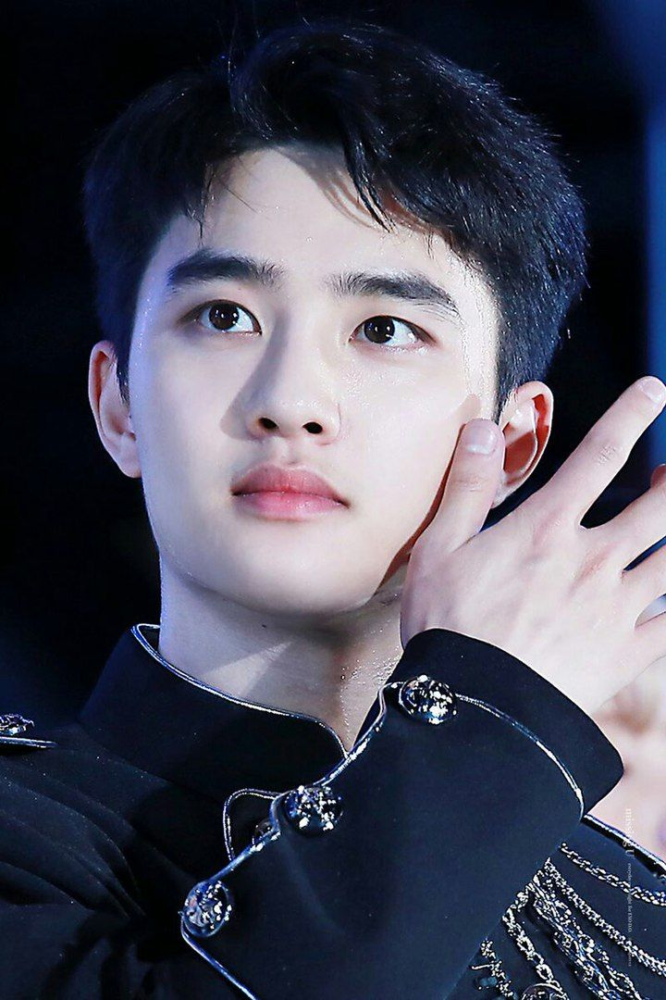
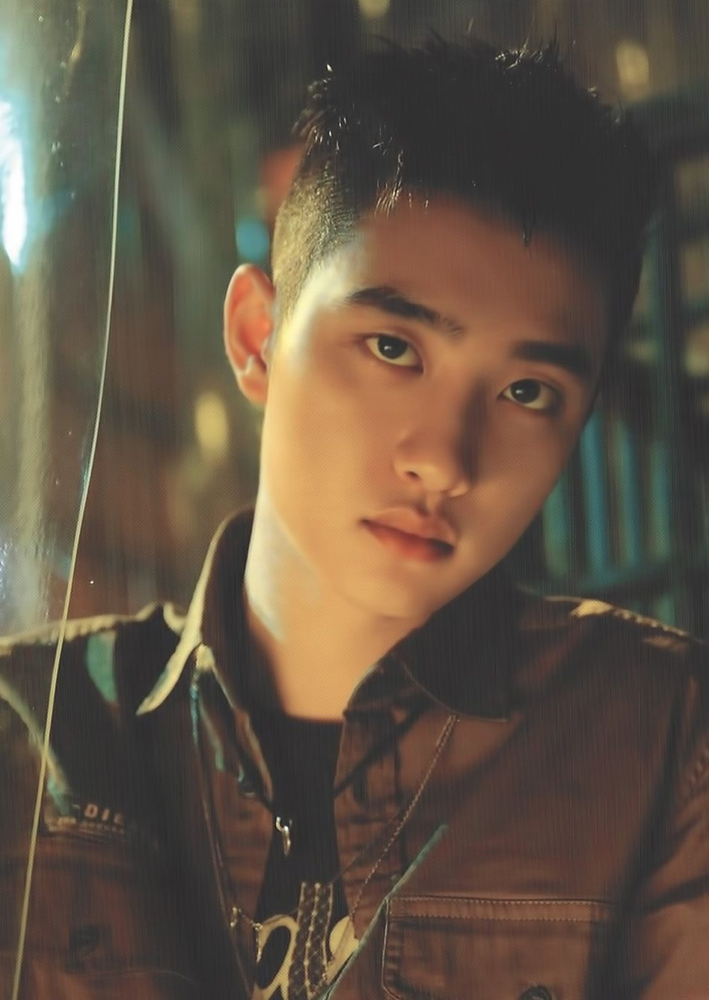
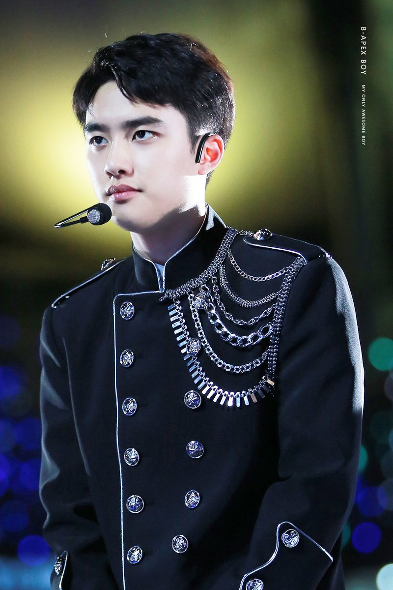
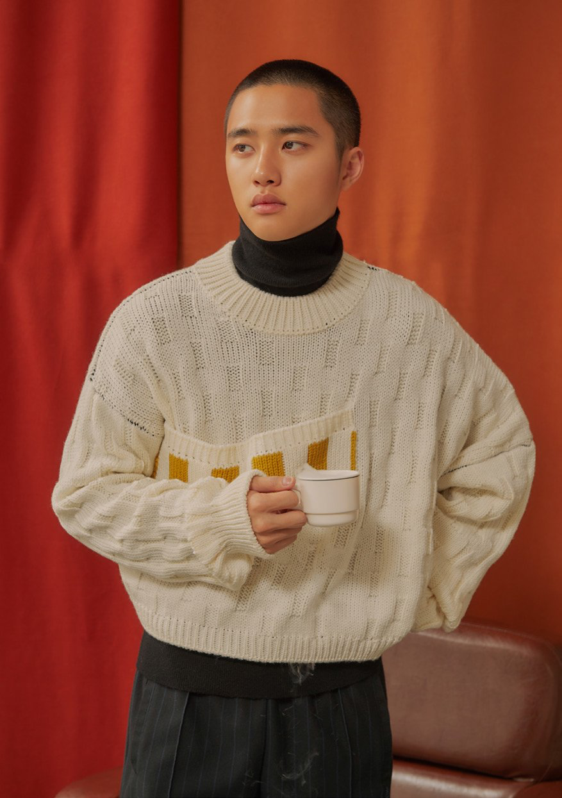

Я вітаю тебе на цій сторінці про популярну корейську
группу ЕХО, залишайся з нами:)

Я вітаю тебе на цій сторінці про популярну корейську
группу ЕХО, залишайся з нами:)
| Псевдонім | Д.О. (Діо) |
| Справжнє ім'я | До Кьонсу |
| Родився | 12 січня 1993 року |
| Родом з | Коян, Кьонгідо, Південна Корея |
| Ріст | 173 см |
| Група крові | А |
До Кьонсу (кор. 도경수, англ. Do Kyungsoo),
родився 12 січня 1993, Коян, Республіка Корея. Також відомий під псевдонімом D.O. (Кор. 디오) - південнокорейський співак і актор. Є учасником південнокорейського бойбенда EXO. Записував багато саундтреків до різних фільмів і серіалів.
Крім своєї групи діяльності, Д.O. також знявся в різних телевізійних серіалах і фільмах, таких як «Мій докучливий брат» (2016), «Будь позитивним» (2016), «Кімната № 7» (2017), «Чоловік на 100 днів» (2018) і «Діти свинга» (2018). А 1
липня 2019 року був раніше потрібного зачислений на військову службу, по
своїй волі. Того ж дня вийшов його “прощальний” сингл “That’s okey”.
   